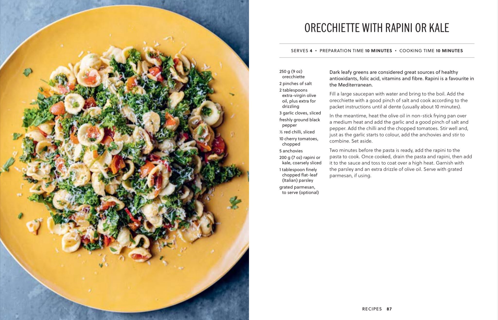
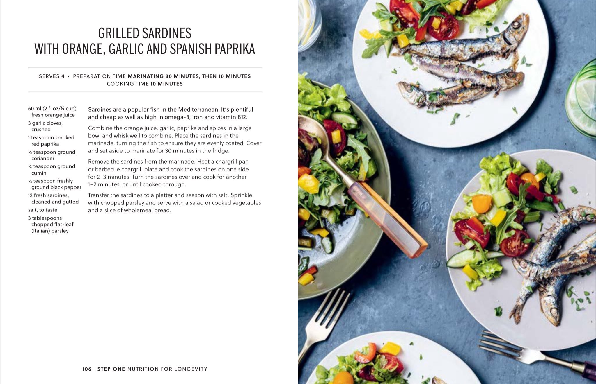
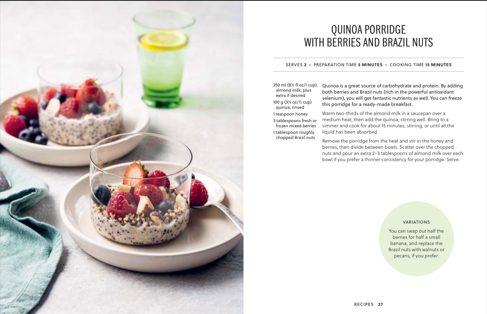

During menopause, dietary patterns that minimize insulin stimulation and emphasize minimally processed plant foods may help counteract the hormonal and metabolic changes that promote adiposity in women.
The are the latest results from the Harvard Nurses Study.
#menopauseHD #weightlossHD #insulinHD #insulinindexHD #planetaryhealthdietHD #nutsHD #legumesHD #fruitHD #vegetablesHD #wholegrainsHD #unsaturatedfatHD #plantproteinHD #redmeatHD #processedmeatHD #hnsHD #harvardHD #potatoesHD #sodiumHD
A new study published in JAMA Network Open provides important insights into weight management during the menopausal transition.
Paper · JAMA Network OpenJAMA Network Open articlejamanetwork.com
Among more than 38,000 women followed for 12 years around menopause, researchers compared multiple dietary patterns and identified two approaches most strongly associated with less weight gain and lower obesity risk:
✅ A low-insulinemic dietary pattern
✅ The Planetary Health Diet
The common features of these dietary patterns were remarkably consistent:
🔹 Higher intake of nuts, legumes, fruits, vegetables, and whole grains
🔹 Greater consumption of plant protein and unsaturated fats
🔹 Lower intake of red and processed meats
🔹 Reduced consumption of potatoes, French fries, and sodium-rich foods
Women with the highest adherence to the Planetary Health Diet had a 54% lower risk of developing obesity compared with those with the lowest adherence, while diets with a higher insulinemic potential were associated with the greatest weight gain.
These findings reinforce a growing body of evidence suggesting that diet quality matters more than simplistic debates about carbohydrates versus fats. During menopause, dietary patterns that minimize insulin stimulation and emphasize minimally processed plant foods may help counteract the hormonal and metabolic changes that promote adiposity.
As clinicians, we should move beyond calorie-focused advice and provide women with practical dietary strategies centered on whole plant foods, healthy fats, and reduced ultra-processed foods.
Menopause is not simply a hormonal transition—it is also a critical opportunity for preventive nutrition.
#Menopause #Nutrition #Obesity #LifestyleMedicine #PreventiveMedicine #Women’sHealth #HealthyAging #Longevity #CardiometabolicHealth #PlantBasedNutrition #PlanetaryHealthDiet #LifestyleInterventions



